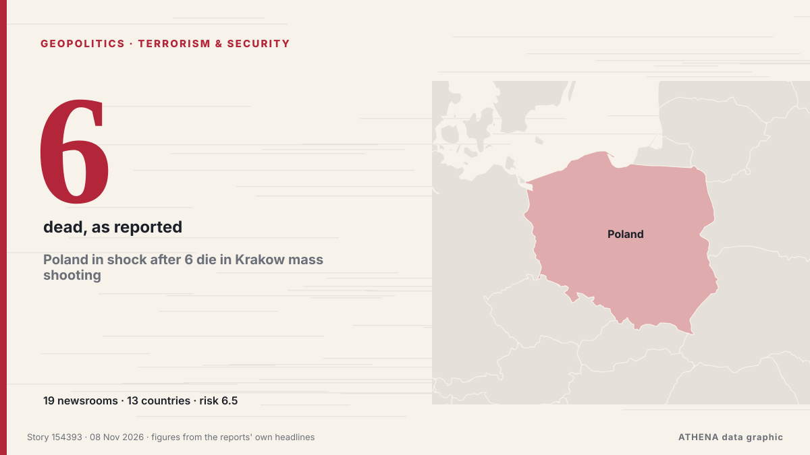

Geopolitics, Politics & Security
SponsoredPresented by  Cybernetics and Artificial Intelligence Lab Welcome to the Cybernetics and Artificial Intelligence Laboratory, established at the Department of Business Administration of the National and Kapodistrian University of Athens. The lab is headed by Professor Dimitrios Thomakos. The lab aims to do research that can be published in top venues. Our research uses tools and methods of Artificial Intelligence, and lies in the following areas: - Forecasting - Decision making - Cyber security - Finance We are always looking forward to collaborating with exceptional students!
Cybernetics and Artificial Intelligence Lab Welcome to the Cybernetics and Artificial Intelligence Laboratory, established at the Department of Business Administration of the National and Kapodistrian University of Athens. The lab is headed by Professor Dimitrios Thomakos. The lab aims to do research that can be published in top venues. Our research uses tools and methods of Artificial Intelligence, and lies in the following areas: - Forecasting - Decision making - Cyber security - Finance We are always looking forward to collaborating with exceptional students!

Terrorism & securityPoland in shock after 6 die in Krakow mass shooting
A Polish gunman likely influenced by far-right ideology killed six people in the main square of the southern city of Krakow before police shot and arrested him, officials said on Saturday, adding… from The Korea Times
| 26 Oct | 318 |
|---|---|
| 27 Oct | 278 |
| 28 Oct | 236 |
| 29 Oct | 245 |
| 30 Oct | 287 |
| 31 Oct | 154 |
| 1 Nov | 212 |
| 2 Nov | 316 |
| 3 Nov | 351 |
| 4 Nov | 397 |
| 5 Nov | 325 |
| 6 Nov | 207 |
| 7 Nov | 165 |
| 8 Nov | 16 |
Iran Executes Three Men over Armed Unrest during January Protests
Iran executed three men on Sunday after they were convicted of carrying out operations for Israel and the US and taking part in armed unrest during anti-government protests in January, state media… from Business Recorder
US ‘Task Force Iron Gate’ in the works to restrict Iranian land commerce alongside naval blockade
After a months-long naval blockade on Iran, the US military has announced the establishment of a task force to bolster Washington’s efforts to restrict Tehran’s movement of advanced weapons systems… from Dawn
Israeli president picks Gadi Eisenkot, Netanyahu rival, to try to form government
Nov 7 (Reuters) - Israel's president on Saturday chose Gadi Eisenkot, Prime Minister Benjamin Netanyahu's strongest rival, to try to form a new government following a deadlocked election that left… from Al-Monitor
Putin orders seizure of more Japan Tobacco assets in Russia
Russian President Vladimir Putin on Friday placed more Russian assets of Japan Tobacco Inc. under control, a day after signing a dec. from Mainichi (English)
Son of Iran’s ousted shah takes controversial prize
Reza Pahlavi received a 'Freedom Prize' in Frankfurt awarded to the Iranian people in a ceremony that critics said was illegitimate. from Free Malaysia Today
Iran says forces 'stronger' than at beginning of war
Iran claims its military capabilities have enhanced amid ongoing tensions with the United States and Middle East conflict. from Arab News
Colombian Firms Back Brazil Before Lula Win
Our experts unpack what Lula’s victory means for Brazil’s ties with Washington and how it could reshape a region trending right. from Atlantic Council
Meet Stephen Miller, Trump's new chief of staff: 5 things to know
The architect of the Trump administration’s brutal crackdowns on immigration and dissent was already known as “the prime minister.” Now he’ll work as the chief of staff. from Wired
27 killed in Saudi strikes on Yemen’s Sanaa province: Houthis
Yemen: Saudi air strikes reported in Sanaa, clashes in Lahij governorate Houthi affiliated media is reporting air strikes targeting the Hamdan district in Sanaa. from Middle East Eye
US offers $20m reward for info on ‘Iran’s nuclear programme’
It gave no specific parameters on what information would yield a $20 million reward. from The Business Standard (Bangladesh) (working feed)
Abdul El-Sayed launches 'Habibi PAC' days after winning Michigan Senate race
With New Hampshire and Georgia staying in Democratic hands, Republicans now look to Michigan for a pickup, where Democrat Abdul El-Sayed is competing with Republican Mike Rogers. from France 24 English
Two explosions reported on Iran’s Qeshm Island
The eastern part of the island was targeted, the news agency reported. from TASS (English)
Russia says it hit targets in and around Kyiv in massive overnight strike
Russia said its forces carried out a massive overnight strike on what it described as targets in Ukraine’s military-industrial sector and energy and transport infrastructure in Kyiv and the… from Cyprus Mail
Qatar says its mediation efforts between US and Iran continue to prevent escalation
Nov 7 (Reuters) - Qatar's Prime Minister said the country's mediation efforts between the US and Iran were continuing to prevent the situation in the region from spiraling out of control, Al Jazeera… from Al-Monitor
Syria denies plans to send troops to Yemen, says military cooperation with Saudi Arabia could expand
Joint training exercises were under way and more were planned in both security and defence. from The Straits Times
Democratic leader Hakeem Jeffries announces bid for US House speaker
'I write to humbly request your support in connection with my candidacy to serve as the next Speaker of the House of Representatives,' says Jeffries in letter. from Anadolu Agency (English)
Trump signs order to preserve Oval Office as national monument
The order comes after Trump made a series of big changes to the decor of the Oval Office and tore down the White House East Wing. from BBC News
Stephen Miller replaces Susie Wiles as Trump's White House chief of staff after GOP's midterm defeat
Just days after the Republican Party's resounding defeat in the midterms, U.S. from CBC News (alternative feed)
Iran's Araghchi holds talks with 12 foreign ministers to defuse tensions
National Security Adviser Wi Sung-lac said Friday that Seoul expects to make progress on the transfer of wartime operational control (OPCON) at defense talks with Washington early next year. from The Korea Times
Death toll from Russian attack on Komyshuvakha rises to 55
Rescue workers have recovered the remains of nine more victims from under the rubble as search operations continue amid the threat of further Russian strikes. from Ukrainska Pravda (English)
Kazakhstan president proposes admitting Russia to Organization of Turkic States
Russia’s Digital Development Ministry has proposed cutting off cellular service to smartphones brought in from abroad starting in April 2027 if their owners fail to register them by IMEI number… from Meduza (English)
Turkey's parliament ratifies Mecca pact
Opposition Republican People’s Party (CHP) leader Kemal Kılıçdaroğlu has stated his party will vote in favor of a defense agreement between Türkiye, Pakistan and Saudi Arabia when it comes before… from Hürriyet Daily News
US strikes Iran’s Qeshm island – Report
The US has not publicly announced the attacks, so as not to signal any intention of resuming major combat operations, the Wall Street Journal reported. from CNA (Channel NewsAsia)
Israeli strikes in Gaza kill 8, including a child
Five people were killed in Khan Yunis and three in Gaza City, according to Gaza's civil defence service. from Free Malaysia Today
Trump says ‘big, beautiful agreement’ on Ukraine ‘might involve all of Europe’
British troops are due to take part in a major Coalition of the Willing military exercise to prepare for potential peace. from Evening Standard (London)
Nato seeks ‘just’ end to Ukraine war as Trump touts deal involving Europe
The US president predicted a major deal with Russia covering Ukraine and wider European affairs, fuelling fears of a US pivot towards Moscow. from Free Malaysia Today
Melania Trump urges ‘humanity over war’ with Ukraine, Russia officials
Melania Trump facilitated a meeting between Ukrainian and Russian officials at the White House, calling for a focus on ‘humanity over war.’ This comes as talks are scheduled for the next week in Abu… from Arab News
Keisha Bottoms makes history as first Black woman elected US governor
Democrat Keisha Lance Bottoms and Republican Rick Jackson are running to be Georgia’s next governor in a race that could reshape control of a crucial battleground state and even make some history… from The National Herald
Pope has voted in the midterms says Vatican
(ANSA) - ROME, 30 OTT - Pope Leo XIV has voted in the US midterm elections, the Vatican said Friday. from ANSA English
Kremlin confirms trilateral talks on Ukraine set for Nov 10-11 in Abu Dhabi
The United States will bring together delegations from Ukraine and Russia in Abu Dhabi on November 10-11 to discuss ending Russia's conflict with Ukraine, post-conflict security agreements and… from CGTN (World)
After JD Vance, now Trump Jr blames Iran war for US midterms defeat
Says war in Iran had weighed on Republican candidates, even as voters backed his handling of it. from Express Tribune
What Americans are saying about how they voted in the midterm elections
Pope Leo XIV, the Catholic Church's first US-born pontiff, has voted in the United States midterm elections, submitting his mail-in ballot in Chicago, the Vatican confirmed. from RTÉ News